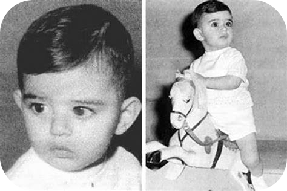
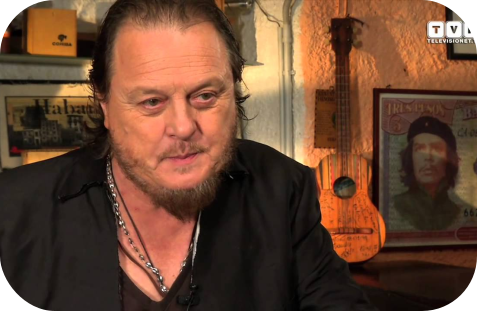

Andrea Bocelli é um tenor Italiano nascido em 22 de Setembro de 1958 em Lajatico, Toscana na Itália.
Desde criança, tinha Glaucoma que é uma doença ocular, que afeta o nervo ótico. Aos 12 anos de idade na
escola, foi atingido por uma bola na cabeça e desde então, não mais vê.
A pedido do pai, estudou Advocacia na Universidade de Pisa. No entanto, continuou sua carreira de músico se
apresentando em bares até que ganhou o concurso de canto de Sanremo em 1994, em que lhe proporcionou
exposição e oportunidades como músico.
Mas afinal, o que é tenor?
Sobre o alcance masculino
Tenor
Possui timbre mais claro e brilhante e as pregas vocais são menores que as de um barítono
Barítono
Timbre mais pesado que o tenor, alcança graves bem definidos e agudos mais incorporados
Baixo
Essa extensão vocal é capaz de desenvolver profundas sonoridades e é uma voz muito comum no Leste Europeu
Sobre o alcance feminino
Soprano
Esse tipo de voz tem certa limitação no alcance de notas mais graves e grande extensão na região aguda
Mazzo Soprano
Está entre soprano e contralto, é uma voz feminina mais versátil, apresenta tessitura na região média e tem um
timbre encorpado em relação ao soprano
Contralto
Voz rara e bastante expressiva; há vozes muito marcantes que vão do tom aveludado ao mais pesado
História na Música

Aos 6 anos de idade começou a tocar piano e flauta, mais tarde saxofone.
Durante sua infância já se apresentava no órgão da Igreja junto a sua vó aos Domingos.
Impressionantemente aos 12 anos de idade em 1970, ganhou seu primeiro prêmio Margherita d’oro com a canção “O
sole Mio”, música esta composta por Eduardo de Capua e Giovanni Capurro, em 1898.
Merecido reconhecimento, Zucchero criou a melodia “Il mare calmo della sera” junto a Biagi Antonacci. Na qual em
1994, disputou o festival Sanremo e venceu.
Neste mesmo ano, cantou ao papa João Paulo || a canção “Ave Maria”. Canção esta
inicialemnte criada em 1722 por Johann Sebastian Bach. Utilizada como base junto a uma inspiração no Evangelho
de Lucas, o compositor francês Charles Gounod no ano de 1859 criou a versão mais conhecida.
No ano de 2020, enquanto estávamos nos tempos mais alarmantes durante o vírus do Covid-19, se apresentou na
Catedral de Milão, transmitindo uma mensagem de paz e esperança para o mundo todo.

Zucchero Fornaciari
Em 1992, Zucchero Fornaciari fez um convite para o tenor Luciano Pavarotti fazer um dueto com ele, porém
Luciano
Pavarotti por já ter escutado anteriormente Andrea Bocelli, o indicou para este dueto com Zucchero, entretanto
foi
Pavarotti que gravou a música e Andrea acompanhou Zucchero na turnê na Europa.
No ano de 1995, participou do festival Sanremo novamente, desta vez com a performance de “Con te Partirò”,
vencendo novamente o que lhe propiciou impulsionamento em sua carreira como músico. Esta música foi criada
por Lucio Quarantotto e Francesco Sartori.
Logo no ano seguinte, fez um dueto com Sarah Brightman porém agora com a música entitulada por
“Time to say Goodbye”.
Por conseguinte da apresentação com Sarah Brightman, conquistou o mercado norte-americano se apresentando
na
Casa Branca.